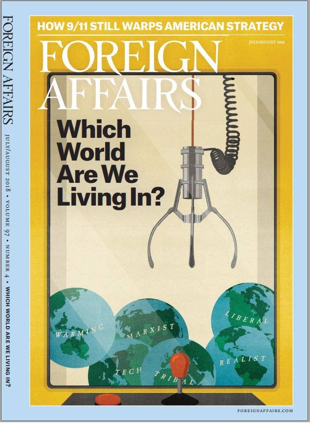

收录于合集

简介
【作者简介】 格雷厄姆·艾利森 （Graham Allison），哈佛大学肯尼迪政府学院首任院长，美国国家安全和国防政策的主要分析师，研究兴趣为核武器、恐怖主义、决策。格雷厄姆·艾利森也是“修昔底德陷阱“概念的提出者，2017年其著作《注定的战争：美国和中国能否逃脱修昔底德陷阱》引起了学界对中美关系的讨论热潮。
【编译】 李代霓
【校对】 李源、褚峰熠
【文章来源】 Foreign Affairs Volume 97 | Issue 4 | July/August 2018 pp.124-133
【期刊简介】 ** __**

__
Foreign Affairs ，成立于1922年，是美国外交关系委员会发布的国际关系和美国外交政策的美国杂志。Foreign Affairs被认为是美国最具影响力的外交政策杂志之一。在其悠久的历史中，该杂志发表了许多开创性的文章，包括1947年出版的乔治凯南的《苏联行为的根源》和1993年出版的塞缪尔亨廷顿的《文明的冲突》，根据2014年的期刊引文报告（Web Of Science）, 该期刊的影响因子为2.009，在“国际关系”类别的85种期刊中排名第6。(维基百科)
自特朗普政府成立以来，在席卷美国外交政策界的辩论中，对自由主义秩序命运的警告已成为少数几个固定的话题之一。关于自由主义秩序，美国目前形成共识的三个核心主张是，首先，自由主义秩序是过去七十年来所谓的大国长期和平的主要原因。其次，构建自由主义秩序一直是美国参与世界的主要动力。第三，美国总统唐纳德·特朗普是对自由主义秩序的主要威胁，从而也是对世界和平的主要威胁。作者对以上的观点持怀疑态度。
【核心观点】
世界的“长期和平”不是自由秩序的结果，而是苏联和美国在冷战的四十五年以及美国短暂时期内权力平衡的产物。美国在世界上的参与不是出于推动海外自由主义或建立国际秩序的愿望，而是出于必须采取必要措施来维护国内的自由民主。因此，虽然特朗普正在破坏当前秩序的关键要素，但他远未成为全球稳定的最大威胁。当下，由于对自由秩序的原因和后果的误解，导致其倡导者呼吁美国应当通过坚持过去的自由主义秩序的支柱并在全球范围内推翻专制主义来加强自由主义秩序。作者认为，美国政府应该限制其在国外秩序的努力，集中精力在国内重建可行的自由民主秩序，而不是寻求回归美国塑造世界的形象。
【论证过程】
文章第一部分 Conceptual Jell-O ，从概念上对自由主义秩序提出质疑。 自由主义秩序概念的界定不清晰，自由主义秩序这一短语中含糊不清的内容使这一概念几乎适用于任何情况。 例如，即使是“联合国宪章”，规定禁止国家对其他国家使用武力或干涉其内政，但是是否执行宪章禁令是联合国安理会的保留，五大国中的每一个都拥有常任理事国席位和否决权，这也就决定了在这样的规则秩序下，也是强者优于弱者。 第二部分 Cold War Order ，冷战时期的国际秩序 。冷战时期的秩序源于权力平衡，是美苏对峙下的意外结果，在两个联盟内部，秩序由超级大国强制执行。在这一时期，美国每项倡议的设计首先是为了击败苏联，如果没有苏联的威胁，那就没有马歇尔计划，也没有北约。而当使用武力违反国际规则时，美国也没有避免使用武力保护其利益。可见，美国在国外推行自由主义秩序首先出于对其国内重大利益的考虑。 第三部分 Unipolar Order, 单极格局下的国际秩序 。冷战结束之后的时期，美国总统乔治·W·布什宣布了“世界新秩序”，在“参与和扩展”战略下，美国欢迎世界加入自由主义秩序。政治学家弗朗西斯·福山的在《历史终结论》中，甚至提出观点“冷战的结束是历史的终结：西方自由民主的演变和普遍化是人类政府的最终形式”。这样的背景之下，推广自由主义秩序的愿景使美国右翼保守派和左翼自由派奇怪地结合，并说服美国历届政府试图通过武力来推动资本主义和自由主义的扩散。然而，美国忽视了其对于自由主义的推广是建立在单极势力对于无力反击的政府使用武力基础之上。随着中国的崛起和俄罗斯的复苏，美国的全球实力在各个领域受到了挑战，这样的挑战引发了人们对美国领导层的质疑。而作者认为，这恰恰说明了冷战的结束仅仅只是产生了一个单极时刻，而不是一个单极时代。 第四部分， T he American Experiment ， 在美国历史上的大部分时间里，美国人更倾向于维护国内民主而非推动国外民主。维护国内民主体现在，一方面保护其免受国外敌人的侵害，另一方面阻止国内权力的滥用。美国联邦政府不断面临考验，也具有不断更新和重塑的能力，这证明了自由主义至少可以在一个国家生存下来。 最后， Sufficient Unto The Day ， 对于目前的全球秩序，虽然特朗普的种种行为令人不安，但是中国崛起、俄罗斯复兴，以及美国实力下降所带来的挑战都远远高于特朗普。特朗普之前，在阿富汗、伊拉克等国不成功的战争，金融危机等等都不同程度使美国的民主失去了信誉，减弱了自由主义秩序的信心。因此，目前，美国在民主治理中所面临的挑战就是在国内重建一个有效的民主制度，而无需将其他国家转变为民主国家，在全球范围内推行自由主义秩序。
点击 阅读原文 可获取本期杂志所有文章（ pdf版）！
**
**
更多阅读：
**
**